マイクロサービス作成① （ローカル環境での開発）
実施すること
認証認可機能と画面表示機能を持ったフロントエンドサービスと、商品情報のCRUD操作のAPIを提供するバックエンドサービスを作成する。
ユーザはブラウザからFrontendにアクセスし、認証成功後にBackendにアクセスすることができる。

作成の流れ
バックエンド作成
フロントエンド作成
BFF改修：BFF -> バックエンドへアクセス可能とする
コンテナ化
2. フロントエンド作成
2-1. プロジェクト作成（Spring Initializr）
SpringBoot: 3.2.2
GroupId: com.example（デフォルト）
ArtifactId: frontend-webapp
Packaging type: Jar
Java version: 17
dependencies: Spring Web（spring-boot-starter-web）
dependencies: Spring Reactive Web（spring-boot-starter-webflux）
dependencies: Spring Security（spring-boot-starter-security）
dependencies: Thymeleaf（spring-boot-starter-thymeleaf）
2-2. ディレクトリ構成変更
可読性向上の為、.javaが含まれるディレクトリを以下のように変更する。合わせてapplication.ymlを作成する。
SpringMicroservice/frontend-webapp/src/main
├── java/com/example
│ └── frontendwebapp
│ ├── app # アプリケーション層
│ ├── domain # ドメイン層
│ ├── config # 各種Spring設定クラスを配置
│ └── FrontendWebappApplication.java # 起動クラス
└── resources
├── application.properties # 削除：今回は.ymlに記載
├── application.yml # 新規作成：アプリケーション設定ファイル
├── static # 静的リソース（CSS、JavaScript、画像など）
└── templates # テンプレート（html）
SpringBootでは@Controllerや@Serviceがついたクラスを自動で認識する。しかし、起動クラスが配置されたディレクトリ配下のみが認識対象である。例えば、config配下に起動クラスを配置した場合には@ComponentScanを利用して、スキャン対象のディレクトリを明示的に指定する必要がある。
2-3. .html作成
フロントエンドは画面を生成してクライアントに返す役割があるため、各種htmlを作成する。画面作成にあたって、Thymeleafを利用する。
ログインページ
<!DOCTYPE html>
<!-- Thymeleafを有効化 => th:XXXX という属性を各タグに追加することで利用可能 -->
<html xmlns:th="http://www.thymeleaf.org">
<head>
<title>ログインページ</title>
</head>
<body>
<h1>Microservice WebApp Login</h1>
<!-- URLパラメータに「error」が含まれていたら、メッセージ出力 -->
<div th:if="${param.error}">
<p>ユーザー名もしくはパスワードが違います</p>
</div>
<!-- ユーザ名・PWをサーバへ送信するためのForm -->
<!-- submitボタンが押下された時のaction（URLパス`/login`へ`post`する）※@はthのリンク記法 -->
<!-- `action="#" はThymleafが有効化されていれば上書きされる -->
<form action="#" th:action="@{/login}" method="post">
<div>
<label for="usernameInput">ユーザ名</label>
<input type="text" id="usernameInput" name="username">
<!-- name="username"はSecurityConfig.javaにてフィールド名指定を合わせる必要がある -->
</div>
<div>
<label for="passwordInput">パスワード</label>
<input type="password" id="passwordInput" name="password">
<!-- name="password"はSecurityConfig.javaにてフィールド名指定を合わせる必要がある -->
</div>
<div>
<button type="submit">ログイン</button>
</div>
</form>
</body>
</html>
ログイン後に表示されるホームページ
<!DOCTYPE html>
<html xmlns:th="http://www.thymeleaf.org">
<head>
<title>Welcomeページ</title>
</head>
<body>
<div>Successful Login!</div>
<ul>
<li><a href="./items.html" th:href="@{/items}">商品一覧</a></li>
</ul>
<ul>
<li><a href="./logout.html" th:href="@{/logout}">ログアウト</a></li>
</ul>
</body>
</html>
ログアウトページ
<!DOCTYPE html>
<html xmlns:th="http://www.thymeleaf.org">
<head>
<title>ログアウトページ</title>
</head>
<body>
<h1>Microservice WebApp Logout</h1>
<form action="#" th:action="@{/logout}" method="post">
<div>
<button type="submit">ログアウト</button>
</div>
</form>
</body>
</html>
2-4. アプリケーションプロパティの設定
アプリケーションの構成情報（DB接続情報・サーバ設定・ログ設定など）をJavaファイルとは別のところに記載することで、ソースファイルにハードコーディングすることなく動作を変更することが可能となる。
今回、バックエンドへアクセスするときのエンドポイント情報（FQDN）を記載する。本アプリケーションは最終的にコンテナ化してAWS上で動作させるが、バックエンドはALBを利用してフロントエンドからアクセスするため、プロパティファイルから読みだす構成とする。
service:{code-block} yaml
:caption: resources/application.yml
backendEndpoint: http://localhost:8081
# backendEndpoint: http://【バックエンドECSクラスターへ負荷分散するALBのFQDN】
2-5. WebClientConfig.java作成
フロントエンドからバックエンドAPIを呼び出す時は、Spring WebFluxに内包されているHTTPクライアントである「WebClient」を利用する。
package com.example.frontendwebapp.config;
import org.springframework.beans.factory.annotation.Value;
import org.springframework.context.annotation.Bean;
import org.springframework.context.annotation.Configuration;
import org.springframework.web.reactive.function.client.WebClient;
@Configuration
public class WebClientConfig {
// application.ymlからプロパティservice.backendEndpointの値を取得して
// 変数backendEndpointへ設定する
@Value("${service.backendEndpoint}")
private String backendEndpoint;
// backendを呼び出すときの基本URIを設定
// つまり、「/backend/items」へリクエストを送信するときに
// 基本URIを設定して「http://xxxx.com/backend/items」へリクエストを送信する
@Bean
public WebClient webClient(){
return WebClient.builder()
.baseUrl(backendEndpoint)
.build();
}
}
2-6. バックエンド呼び出し用サービスクラス作成
WebClientを利用して、backend-itemを呼び出すサービスクラスを作成
package com.example.frontendwebapp.domain;
import org.springframework.beans.factory.annotation.Autowired;
import org.springframework.stereotype.Service;
import org.springframework.web.reactive.function.client.WebClient;
@Service
public class itemService {
@Autowired
WebClient webClient;
public String getAllItems(){
return webClient.get()
.uri("/backend/items")
.retrieve() // retrieveの後にレスポンスを抽出する方法を記述する
.bodyToMono(String.class) // String型で受け取る
.block(); // ブロッキング
}
}
2-7. frontController.java作成
@GetMappingを利用して特定のパスへのGET時に、Thymeleafによりテンプレートから生成されたhtmlを返すコントローラを作成する。
package com.example.frontendwebapp.app;
import org.springframework.beans.factory.annotation.Autowired;
import org.springframework.stereotype.Controller;
import org.springframework.web.bind.annotation.GetMapping;
import org.springframework.web.bind.annotation.ResponseBody;
import com.example.frontendwebapp.domain.itemService;
@Controller
public class frontController {
// 引数なしの場合はアプリケーションのコンテキストルート
// http://<ホスト名>:<ポート番号>/ へのGET時に呼び出される
@GetMapping
public String home(){
return "home"; // home.htmlをreturn
}
// http://<ホスト名>:<ポート番号>/login
@GetMapping("/login")
public String login(){
return "login"; // login.htmlをreturn
}
// http://<ホスト名>:<ポート番号>/logout
@GetMapping("/logout")
public String logout(){
return "logout"; // logout.htmlをreturn
}
// backend-item呼び出し
// http://<ホスト名>:<ポート番号>/items
@Autowired
private itemService itemService;
@GetMapping("/items")
@ResponseBody
public String items(){
return itemService.getAllItems(); // @ResponseBodyアノテーションにより、バックエンドから返却した戻り値をそのまま文字情報としてreturn
}
}
Thymeleafを利用しているため、Stringでreturnしてしまうとhtmlファイル名であると解釈してしまうため、htmlファイルではなくてレスポンス本文であることを明示的にする@ResponseBodyアノテーションを付与する。
2-8. SecurityConfig.java作成
SpringSecurityの挙動をカスタムする
package com.example.frontendwebapp.config;
import org.springframework.context.annotation.Bean;
import org.springframework.context.annotation.Configuration;
import org.springframework.security.config.annotation.web.builders.HttpSecurity;
import org.springframework.security.config.annotation.web.configuration.EnableWebSecurity;
import org.springframework.security.web.SecurityFilterChain;
@Configuration
@EnableWebSecurity
public class SecurityConfig {
@Bean
protected SecurityFilterChain configure(HttpSecurity http) throws Exception {
http
.authorizeHttpRequests((requests) -> requests
.requestMatchers("/login/*").permitAll() // "/login"は認証不要
.anyRequest().authenticated() // その他のリクエストは認証が必要
)
.formLogin((form) -> form // 認証方式はformログイン
.loginPage("/login") // 認証ページは"/login"
.permitAll()
)
.logout((logout) -> logout.permitAll()); // ログアウト機能を有効化し、すべてのユーザがログアウト可能
return http.build();
}
}